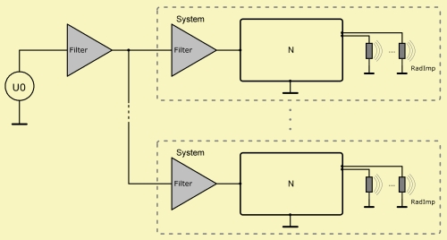

See also Network and Components.

The Lumped Element Analysis allows for multiple Systems. Each System is comprised of a driving bank of Filter-components and a flow-network of components. The Filter-bank is optional.
Between Systems there is no flow, i.e. each system is decoupled from any other system.
All Systems are wired in parallel at its input port or at its Filter-bank.
The whole assembly is driven by a potential source Def_Driving, which optionally can be modified with the help of a bank of Filters. In the script global Filters have to be declared before all Systems, i.e. in the so-called Definition part.
For each network there can be only a single driving node. In the script it is the one with the smallest node-index.
If coupled to the Boundary Element Analysis or Direct Sound Analysis Systems have either RadImp- or MeasRadiator-components. RadImp-components will automatically install hidden mutual radiation impedance components within a network but not across Systems. Hence, there will be no mutual radiation coupling between RadImps from different Systems.
The lumped elements system can be observed with the help of section LE_Spectrum. In order to identify the observation point, we have to specify the particular System=, which hosts the component of observation.
Direct Sound with MeasRadiators
Boundary Element with Def_Driver